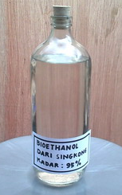
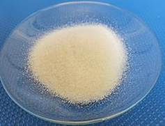
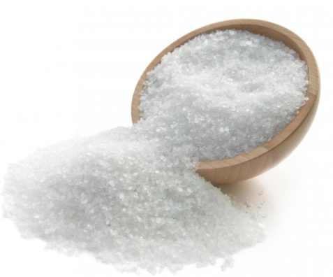

Fakta om Alkohol
Etanol (även etylalkohol) är det som i dagligt tal kallas "alkohol", med den kemiska formeln C2H5OH. Den är en alkohol och psykoaktiv drog. Genom vätebindning och att den har så kort kolkedja löser den sig, för att vara alkohol, relativt lätt i vatten. Alla alkoholer har en viss giftverkan, men etanol är den minst giftiga av de envärda alkoholerna. Den kan i utspädd form och i tillräckligt små doser (upp till något eller några gram per kilogram kroppsvikt) förtäras utan livshotande konsekvenser.
Fakta om Stearinsyra
Stearinsyra eller oktadekansyra är en mättad fettsyra med 18 kolatomer. Salter och estrar av stearinsyra får suffixet stearat. Stearinsyra ingår tillsammans med palmitinsyra i stearin, som används för ljustillverkning. Den kemiska formeln: C18H36O2
Fakta om Salt
Salt är ett mineral som huvudsakligen består av natriumklorid. I små kvantiteter är mineralet livsnödvändigt för allt djurliv. I för stora mängder är det emellertid skadligt för djur och växter. Smaken salt är en av grundsmakerna, vilket gör salt till en av de äldsta och mest allmänt förekommande kryddorna. Saltning är även en viktig konserveringsmetod.